Datação por Isócronos
por Chris Stassen
Visão geral
- Datação radiométrica genérica
- Metodologia isócrona
- Evitação dos problemas da datação genérica
- Então, os métodos isócronos são infalíveis?
- Algumas perguntas do talk.origins sobre métodos isócronos
- Leitura adicional
- Referências
Datação Radiométrica Genérica
A forma mais simples de cálculo de idade isotópica envolve substituir três medições em uma equação de quatro variáveis e resolver para a quarta. A equação é aquela que descreve o decaimento radioativo:
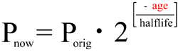
As variáveis na equação são:
- Pnow - A quantidade do isótopo pai que permanece atualmente. Esta é medida diretamente.
- Porig - A quantidade do isótopo pai que estava originalmente presente. Esta é calculada a partir da quantidade atual do isótopo pai mais a quantidade acumulada do isótopo filho.
- halflife - O tempo de meia-vida do isótopo pai. São utilizados valores padrão, baseados em medições diretas. (A constância da taxa de decaimento é abordada no FAQ sobre a Idade da Terra.)
- age - O valor calculado a partir da equação e das outras três quantidades, representa a quantidade de tempo que se passou.
Resolvendo a equação para "idade" e incorporando o cálculo da quantidade original do isótopo pai, obtemos:
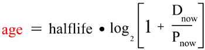
Problemas potenciais para a datação genérica
Algumas suposições foram feitas na discussão sobre a datação genérica, para manter a computação simples. Tais suposições não serão sempre precisas no mundo real. Estas incluem:
- A quantidade de isótopo filhante no momento da formação da amostra é zero (ou conhecida independentemente e pode ser compensada).
- Nenhum isótopo pai ou isótopo filhante entrou ou saiu da amostra desde o momento de sua formação.
Se uma dessas suposições foi violada, o cálculo simples acima produz uma idade incorreta.
Observe que a mera existência dessas suposições não torna os métodos de datação mais simples inteiramente inúteis. Em muitos casos, existem sinais independentes (como o ambiente geológico ou a química do espécime) que podem sugerir que tais suposições são inteiramente razoáveis. No entanto, os métodos devem ser utilizados com cuidado — e deve-se ter cautela ao investir muita confiança na idade resultante... especialmente na ausência de verificações cruzadas por diferentes métodos, ou se apresentados sem informações suficientes para julgar o contexto em que foram obtidas.
Métodos isócronos evitam os problemas que podem potencialmente resultar de ambas as suposições acima.
Metodologia isócrona
A datação por isócronos exige uma quarta medição, que é a quantidade de um
outro isótopo do mesmo elemento que o produto de decaimento radioativo. (Por
brevidade, daqui para frente, referirei-me ao isótopo pai como P, ao
isótopo filho como D, e ao isótopo não radiogênico do mesmo elemento que
o filho, como Di). Além disso, exige que essas
medições sejam realizadas em vários objetos diferentes que se formaram ao mesmo tempo a partir
de um reservatório comum de materiais. (Rochas que incluem vários minerais diferentes são
excelentes para isso.)
Cada grupo de medições é plotado como um ponto de dados em um gráfico. O eixo X do gráfico é a razão entre P e Di. O eixo Y do gráfico é a razão entre D e Di. Por exemplo, um gráfico de isócrona Rb/Sr parece-se com este:
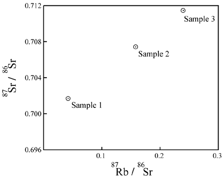
P = 87Rb;
D = 87Sr; Di
= 86Sr.Figura 1. Exemplo de gráfico de isócrona.
O que isso significa?
A intenção do gráfico é avaliar uma correlação entre:
- O nível de
P(valor X dos pontos de dados), e - Qualquer enriquecimento em
D(valor Y dos pontos de dados):
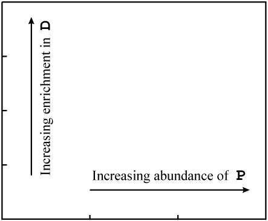
Figura 2. Significado dos eixos do gráfico.
Se os pontos de dados no gráfico forem colineares e a linha tiver uma inclinação positiva, isso mostra uma correlação extremamente forte entre:
- A quantidade de
Pem cada amostra, e - O grau em que é enriquecida em
D, em relação aDi.
Esta é uma consequência necessária e esperada, se o D adicional for um produto do decaimento do P em um sistema fechado ao longo do tempo. Não é facilmente explicável, no caso geral, de qualquer outra maneira.
Por que os dados de isocronia são colineares
Os pontos de dados seriam esperados para começar em uma linha se certas condições iniciais fossem atendidas. Considere alguma rocha fundida na qual os isótopos e elementos estão distribuídos de maneira razoavelmente homogênea. Sua composição seria representada como um único ponto no gráfico de isócrono:
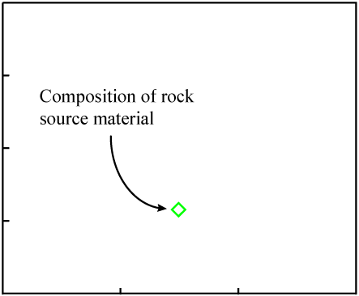
Figura 3. Composição global do derretimento.
À medida que a rocha esfria, os minerais se formam. Eles "escolhem" átomos para inclusão com base em suas propriedades químicas.
Como D e Di são isótopos do mesmo elemento, possuem propriedades químicas idênticas*. Os minerais podem incluir quantidades variadas desse elemento, mas todos herdarão a mesma razão D/Di que o material de origem. Isso resulta em um valor Y idêntico para os pontos de dados que representam cada mineral (correspondendo ao valor Y do material de origem).
* Observe que o acima é algo simplificado. Existem diferenças menores entre os isótopos do mesmo elemento e, em circunstâncias relativamente raras, é possível obter alguma quantidade de diferenciação entre eles. Isso é conhecido como fraçãoção isotópica. O efeito é quase sempre uma muito pequena desvio da distribuição homogênea dos isótopos – talvez o suficiente para introduzir um erro de 0,002 vidas médias em uma idade não-isócrona. (Pode acontecer... mas é raro e o efeito não é grande o suficiente para explicar idades extremamente antigas em formações supostamente jovens.)
Em contraste, P é um elemento diferente com propriedades químicas distintas.
Portanto, será distribuído de forma desigual em relação a D &
Di à medida que os minerais se formam. Isso resulta em uma faixa de valores de X para os
pontos de dados que representam minerais individuais.
Como os pontos de dados têm o mesmo valor Y e uma variedade de valores X, inicialmente eles caem em uma linha horizontal:
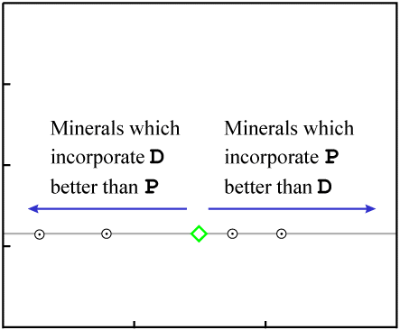
Figura 4. Migração diferencial de elementos conforme os minerais se formam.
Uma linha horizontal representa "idade zero." *
* Mais precisamente, uma linha horizontal representa uma idade indistinguível de zero. Na maioria dos casos, qualquer idade inferior a cerca de 10-3 P meias-vidas incluirá zero dentro de sua faixa de incerteza. (A faixa de incerteza varia e pode ser até uma ordem de grandeza diferente do valor aproximado acima. Ela depende da precisão das medições e do ajuste dos dados à linha em cada caso individual.) Por exemplo, com a datação por isócrona Rb/Sr, qualquer idade inferior a algumas dezenas de milhões de anos é geralmente indistinguível de zero. Isso abrange toda a escala de tempo da Terra jovem milhares de vezes.
Com o passar do tempo e a ocorrência de uma quantidade significativa de decaimento radioativo, a quantidade de
P diminui em uma quantidade perceptível em cada amostra, enquanto a quantidade de
D aumenta na mesma quantidade. Isso resulta em um movimento dos pontos de dados
para a esquerda (diminuindo P) e para cima (aumentando D).
Como cada átomo de P decai em um átomo de D, o ponto de dados de cada amostra se moverá ao longo de um caminho com uma inclinação de -1.
O decaimento ocorre de forma proporcional (isto é, quando 20% do P em uma amostra decaiu, 20% do P em qualquer amostra terá decaído). Como resultado, os pontos de dados com mais P (os mais à direita no gráfico) percorrem a maior distância por unidade de tempo. Os pontos de dados permanecem colineares com o passar do tempo, mas a inclinação da linha aumenta:
|
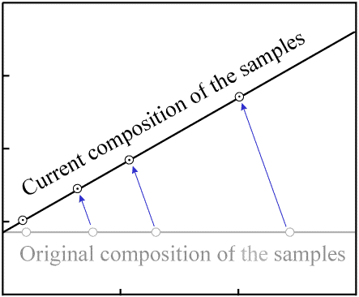 Figura 5. Movimento dos pontos de dados conforme ocorre o decaimento. |
|
A inclinação da linha é a razão entre o D enriquecido e o P restante. Pode ser usada no lugar de "Dnow/Pnow" na equação de decaimento.
Observações diversas
Idade "incerteza"
Quando um método de datação "simples" é aplicado, o resultado é um único número. Não há uma boa maneira de determinar o quão próximo o resultado computado provavelmente está da idade real.
Uma característica adicional agradável das idades isocrônicas é que uma "incerteza" na idade é automaticamente calculada a partir do ajuste dos dados a uma linha. Uma operação estatística rotineira sobre o conjunto de dados produz tanto a inclinação da linha de melhor ajuste (uma idade) quanto uma variância na inclinação (uma incerteza na idade). Quanto melhor o ajuste dos dados à linha, menor a incerteza.
Para mais informações sobre ajuste de linhas a dados (também conhecido como análise de regressão), consulte:
- Gonick (1993, pp. 187-210), uma excelente introdução não técnica à análise de regressão genérica.
- York (1969), uma breve visão técnica de uma técnica especialmente projetada para avaliar ajustes de isócronos.
Observe que os métodos utilizados por geólogos de isótopos (como descritos por York) são muito mais complicados do que aqueles descritos por Gonick. Isso será discutido com mais detalhes na seção sobre o artigo de Gill abaixo. O método "genérico" descrito por Gonick é mais fácil de entender, mas não lida com necessidades como: (1) níveis variados de incerteza nas medições X versus Y dos dados; (2) calcular uma incerteza na inclinação e na interseção Y a partir dos dados; e (3) testar se o "ajuste" dos dados à linha é bom o suficiente para implicar que a isócrona fornece uma idade válida. Infelizmente, é necessário navegar por alguma matemática pesada para compreender os procedimentos utilizados para ajustar linhas de isócrona aos dados.
Comentários gerais sobre "suposições de datação"
Todos os métodos de datação radiométrica exigem, para produzir idades precisas, certas condições iniciais e ausência de contaminação ao longo do tempo. A propriedade maravilhosa dos métodos de isócrono é: se uma dessas exigências for violada, é quase certo que os dados indicarão o problema ao não se plotarem em uma linha. (Este tópico será discutido com muito mais detalhe abaixo.) Onde os métodos simples produzirão uma idade incorreta, os métodos de isócrono geralmente indicarão a inadequação do objeto para datação.
Evitar os problemas da datação genérica
Agora que a mecânica de plotar um isócrono foi descrita, discutiremos os problemas potenciais do método de datação "simples" em relação aos métodos de isócrono.
Produto inicial da filha
A quantidade inicial de D não é exigida nem assumida como zero. Quanto maior a razão inicial de D-para-Di, mais acima do eixo X fica a linha horizontal inicial. Mas a idade computada não é afetada.
Se uma das amostras, por acaso, não contivesse nenhum P (ela se plotaria onde a linha isócrona intercepta o eixo Y), então sua quantidade de D não mudaria com o tempo -- porque não teria átomos pais para produzir átomos filhas. Seja ou não haja um ponto de dados no eixo Y, a interceptação Y da linha não muda conforme a inclinação da linha isócrona muda (como mostrado em Figura 5). Portanto, a interceptação Y da linha isócrona fornece a razão inicial global de D para Di.
Para cada amostra, seria possível medir a quantidade de Di, e (usando a razão identificada pela interseção com o eixo Y do gráfico isócrono) calcular a quantidade de D que estava presente quando a amostra se formou. Essa quantidade de D poderia ser subtraída de cada amostra, e então seria possível derivar uma idade simples (pela equação introduzida na primeira seção deste documento) para cada amostra. Cada tal idade corresponderia ao resultado fornecido pelo isócrono.
Contaminação - isótopo pai
Adição ou perda de P altera os valores X dos pontos de dados:
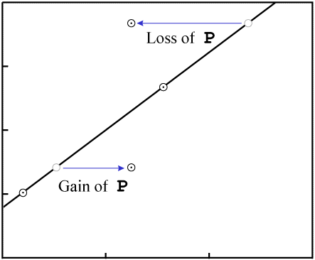
Figura 6. Ganho ou perda de
P.Para tornar os gráficos fáceis de ler (e rápidos de desenhar), os exemplos neste artigo incluem poucos pontos de dados. Embora as isócronas sejam realizadas com poucos pontos de dados, as melhores incluem uma quantidade maior de dados. Se a linha da isócrona tiver uma inclinação distintamente não nula e um número bastante grande de pontos de dados, o resultado quase inevitável da contaminação (falha do sistema em permanecer fechado) será que o ajuste dos dados a uma linha será destruído.
Por exemplo, considere um evento que remove P. Os pontos de dados tenderão a se mover em distâncias variáveis, pois os diferentes minerais terão resistências variáveis à perda de P, bem como níveis variáveis de Di:
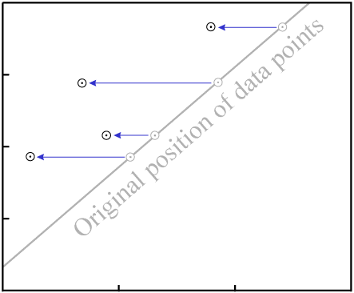
Figura 7. Perda de
P em todas as amostrasO resultado final é que os dados quase certamente não permanecerão colineares:
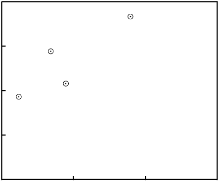
Figura 8. A perda de
P destrói o ajuste a uma linha.Até mesmo no nosso exemplo simples de isócrono com quatro pontos de dados, uma alteração em dois dos amostras...
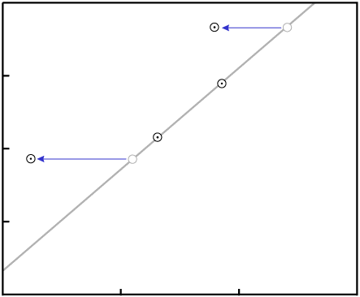
Figura 9. Migração do pai em dois pontos de dados.
... exigiria alterações exatas nas duas amostras restantes para que os dados permanecessem colineares:
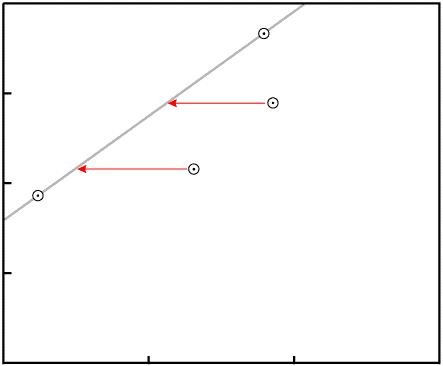
Figura 10. Perda específica de
P necessária para produzir um gráfico colinear diferente. As duas amostras devem cada uma mudar pela quantidade indicada -- nem mais nem menos -- se os dados devem permanecer colineares.
Nota: No caso especial em que a linha isócrona tem inclinação zero (indicando idade zero), então o ganho ou perda de P pode mover os pontos de dados, mas todos ainda cairão na mesma linha horizontal. Em outras palavras, o ganho ou perda aleatório de P não afeta uma isócrona de idade zero. Este é um ponto importante. Se a Terra fosse tão jovem quanto os criacionistas da Terra jovem insistem, então a "contaminação" que eles sugerem para invalidar os métodos de datação não teria nenhum efeito perceptível nos resultados.
Contaminação - isótopo-filha
No caso de datação por isócrono Rb/Sr, a forma mais comum de migração isotópica é a perda preferencial da filha radiogênica (87Sr). Faure (1986, p. 123) observa:
Além disso, os átomos filhas produzidos pelo decaimento em um mineral são isótopos de elementos diferentes e possuem cargas iônicas e raios diferentes em comparação com seus pais. A energia liberada durante o decaimento pode produzir discordâncias ou até mesmo destruir a rede cristalina localmente, tornando assim ainda mais fácil para as filhas radiogênicas escaparem.
[...]
O comportamento observado dos minerais pode geralmente ser tratado como se tivesse sido causado exclusivamente pela migração do 87Sr radiogênico entre os minerais constituintes de uma rocha.
Isso alterará a posição vertical dos pontos de dados:
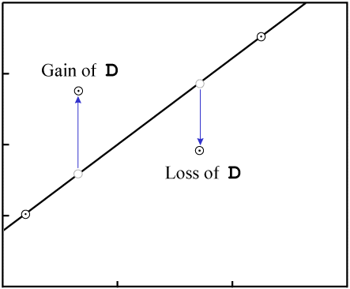
Figura 11. Ganho ou perda de
D.Assim como no ganho ou perda de P, no caso geral é altamente improvável que o resultado seja um isócrono com pontos de dados colineares:
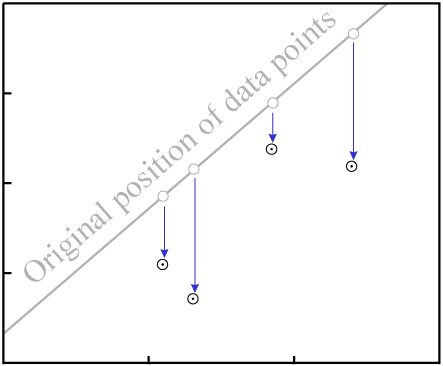
Figura 12. Ganho/perda de
D destrói o ajuste a uma isócrona.Exceções para perda de filha
Existem duas exceções, onde é possível que a migração de D resulte em um isócrono com pontos de dados razoavelmente colineares:
- Se o
Dfor completamente homogeneizado, então a idade do isócrono é resetada para zero. Quando isso acontece, qualquer tentativa de datação posterior resultará na idade desse evento metamórfico em vez do tempo original de cristalização:
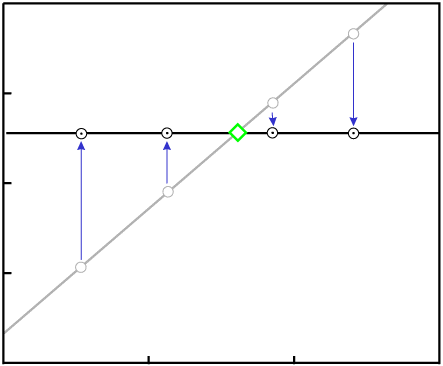
Figura 13. A homogeneização completa do filho radiogênico reseta a idade do isócrono para zero. - Se o
Dfor parcialmente homogeneizado de uma maneira razoavelmente regular, a idade do isócrono pode ser parcialmente resetada e as amostras datarão de algum momento entre o tempo original de cristalização e o tempo de metamorfismo. Isso é uma ocorrência muito rara, mas existem exemplos conhecidos:
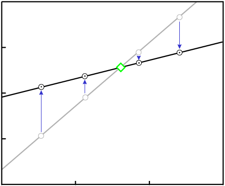
Figura 14. A homogeneização parcial do filhante radiogênico (em alguns casos excepcionais) resulta em uma isócrona aparentemente válida com idade reduzida.
Essas exceções não devem trazer muito conforto aos defensores da Terra jovem, pois (1) são raras (extremamente raras no caso de reset parcial); e (2) o resultado em ambos os casos é uma idade isócrona que é muito jovem para representar o tempo de formação. Os defensores da Terra jovem insistem necessariamente que todas as idades isócronas antigas são realmente muito antigas.
Então, os métodos de isocrono são infalíveis?
No mundo real, nada é perfeito. Existem alguns resultados de isócronos que são claramente incorretos. A significância dos gráficos de isócronos é um pouco contra-intuitiva em alguns casos. E existem processos conhecidos que podem resultar em uma idade de isócrono incorreta. Isso deixa espaço para descartar a datação por isócronos como inteiramente não confiável? Não exatamente...
- A grande maioria dos resultados de datação por isócrono está de acordo com a idade e a história mainstream da Terra. Se os resultados fossem essencialmente números aleatórios, essa não seria a distribuição de resultados esperada. Veja as tabelas de idades de isócrono de meteoritos em The Age of the Earth FAQ, por exemplo.
- Idades "contraintuitivas" -- por exemplo, resultados que indicam um evento anterior ao tempo de cristalização do objeto amostrado -- são geralmente produzidas pela seleção inadequada de amostras e podem ser evitadas na maioria dos casos. Para um exemplo, veja minha Critique of ICR's Grand Canyon Dating Project.
- Os processos que poderiam produzir idades de isócrono incorretas requerem circunstâncias especiais e não são universalmente aplicáveis à ampla gama de tipos de rocha e minerais nos quais a datação por isócrono (por vários isótopos radioativos diferentes) foi realizada com sucesso.
Em seguida, examinaremos em detalhes alguns exemplos específicos.
Violação do requisito cogenético
Um dos requisitos para a datação por isócrono é que as amostras sejam cogenéticas, ou seja, que todas tenham se formado aproximadamente ao mesmo tempo a partir de um reservatório comum de material no qual os elementos e isótopos relevantes foram distribuídos razoavelmente de forma homogênea. (Como descrito na Figura 4, é assim que os dados são levados a ser colineares.)
Normalmente, é fácil determinar se esse requisito é atendido. A verificação não se limita apenas ao gráfico de isócrona em si (que, na maioria dos casos, pode indicar tal problema pela falha dos dados em se alinhar a uma linha), mas também à localização física e às relações geológicas das amostras selecionadas para datação.
Se esse requisito for violado, ainda é possível obter, às vezes, um gráfico isócrono com pontos de dados razoavelmente colineares. A significância da idade computada, no entanto, provavelmente não será a última vez de cristalização de cada amostra. Pode ser, em vez disso, o tempo original em que as amostras se separaram de um reservatório comum de matéria, ou a idade desse material de origem. A idade resultante é significativa, mas não possui o significado que se poderia esperar para o resultado de datação (ou seja, tempo de cristalização da amostra datada em si).
Considere um antigo corpo de rocha (como evidenciado pelo seu bom ajuste a uma isócrona com inclinação claramente não nula) com minerais que derretem em temperaturas diferentes. Neste exemplo, os minerais com o ponto de fusão mais baixo possuem as menores razões de P-para-Di e D-para-Di:
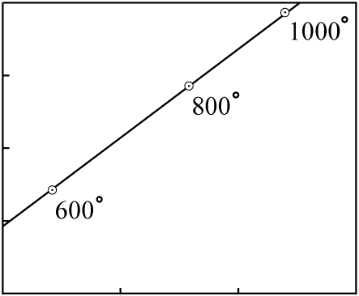
Figura 15. Uma rocha antiga, minerais anotados com temperaturas de fusão
A rocha é aquecida lentamente e, em vários momentos, as porções fundidas são movidas para a superfície em uma série de fluxos de lava. Os fluxos mais antigos terão uma composição isotópica próxima à dos minerais com os pontos de fusão mais baixos; os fluxos mais recentes terão uma composição isotópica próxima à dos minerais com os pontos de fusão mais altos.
Os fluxos individuais de lava não são cogenéticos. Eles não se separaram aproximadamente ao mesmo tempo de um reservatório de matéria isotopicamente homogêneo.
Por simplicidade, assumiremos três fluxos de lava, cada um com uma composição correspondente aos pontos de dados da figura anterior:
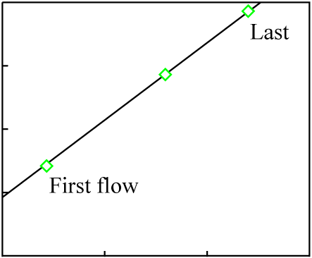
Figura 16. A composição isotópica dos diversos fluxos de lava
É provável que pelo menos uma pequena quantidade de diferenciação química tenha ocorrido em cada magma, e que, como resultado, os minerais de cada fluxo de lava individual exibam uma isócrona muito mais jovem (a idade real de cada fluxo):
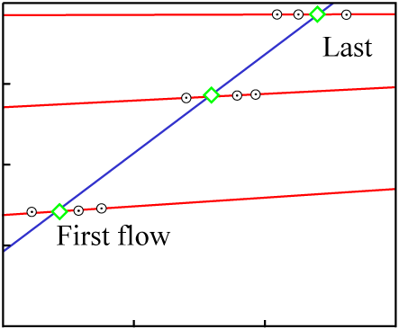
Figura 17. As isócronas minerais (vermelhas) dos vários fluxos fornecem várias idades jovens diferentes.
Os pontos de dados para a composição geral de cada fluxo caem sobre uma linha isócrona representando o tempo original de cristalização do material fonte, que é muito maior do que a idade de qualquer um dos fluxos. Essa espécie de idade herdada é bem compreendida, discutida minuciosamente na literatura e, geralmente, facilmente evitada pela seleção adequada de amostras.
Observe também que a diferenciação química no momento do último derretimento (resultando nos pontos de dados arredondados na Figura 17) induz dispersão significativa no gráfico de isócrona se qualquer medida além da rocha total for utilizada:
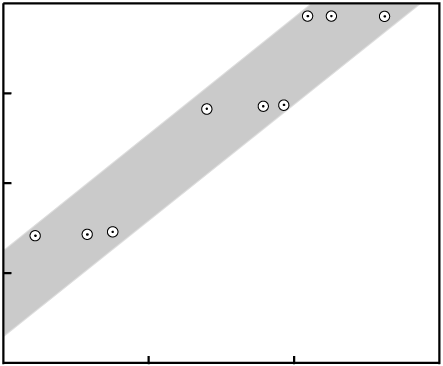
Figura 18. Os pontos de dados de amostras individuais de minerais mostram dispersão devido à diferenciação química no último momento de fusão.
Mistura de duas fontes
Também é possível obter um isócrono com dados colineares, cuja idade não tem qualquer significado. A única maneira razoavelmente comum é através da mistura de materiais.
Considere duas fontes inteiramente independentes de material, A e
B, cada uma com uma composição isotópica diferente:
|
|
|||||
| Fonte material |
P(ppm) |
D(ppm) |
Di(ppm) |
P |
D |
|
|
|||||
A |
18 | 37 | 39 | 0.462 | 0.949 |
B |
10 | 17 | 11 | 0.909 | 1.545 |
|
|
|||||
Cada um poderia ser plotado como um ponto de dados em um diagrama de isócrono:
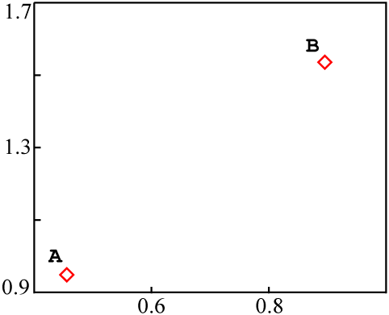
Figura 19. Posição do material de origem em um gráfico de isócrono.
Se essas fontes fossem misturadas juntas em uma única rocha, de tal forma que as diferentes amostras da rocha acabassem com proporções diferentes de A e B, sem diferenciação química, o resultado final seria algo como este:
|
|
|||||
| Amostra fonte |
P(ppm) |
D(ppm) |
Di(ppm) |
P |
D |
|
|
|||||
A |
18 | 37 | 39 | 0.462 | 0.949 |
¾ A + ¼ B |
16 | 32 | 32 | 0.500 | 1.000 |
½ A + ½ B |
14 | 27 | 25 | 0.519 | 1.080 |
¼ A + ¾ B |
12 | 22 | 18 | 0.667 | 1.222 |
B |
10 | 17 | 11 | 0.909 | 1.545 |
|
|
|||||
A e
B em cada uma.Quando plotados em um diagrama de isócrono, os pontos de dados mistos são todos colineares com A e B:
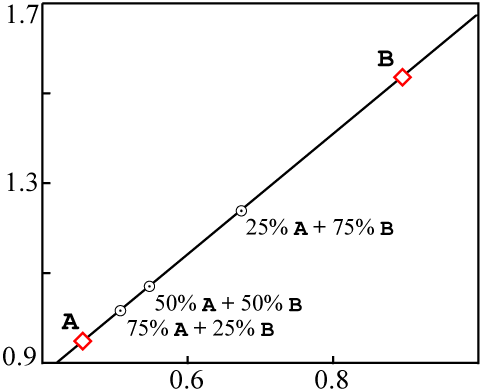
Figura 20. Gráfico de isócrono de duas fontes mistas
A mistura parece ser um problema pernicioso. Como A e
B podem ser completamente não relacionados entre si, suas composições individuais
podem plotar em uma faixa bastante ampla de locais no gráfico. A linha
AB pode ter qualquer inclinação.
Esse fato também nos permite fazer uma estimativa grosseira da porcentagem de isócronas que geram gráficos colineares devido à mistura. As isócronas "significativas" (ou "válidas") devem ter inclinação zero ou positiva; as isócronas de "mistura" podem ter qualquer inclinação. Se as isócronas de inclinação negativa (que devem ser linhas de mistura) fossem razoavelmente comuns, então poderíamos suspeitar que a mistura é uma explicação para uma fração significativa de todas as isócronas "antigas" aparentemente válidas também. Isso não é o caso, no entanto.
Além disso, existe um teste relativamente simples que pode detectar mistura na maioria dos casos. O teste é um gráfico com o mesmo eixo Y que o gráfico isócrono, mas com um eixo X de recíproco do elemento filhote total (D + Di).
Para os dados amostrais usados acima, os valores plotados seriam:
|
|
||||||
| Amostra fonte |
P(ppm) |
D(ppm) |
Di(ppm) |
1(ppm-1) |
D |
|
|
|
||||||
A |
18 | 37 | 39 | 0.0132 | 0.949 | |
¾ A + ¼ B |
16 | 32 | 32 | 0.0156 | 1.000 | |
½ A + ½ B |
14 | 27 | 25 | 0.0192 | 1.080 | |
¼ A + ¾ B |
12 | 22 | 18 | 0.0250 | 1.222 | |
B |
10 | 17 | 11 | 0.0357 | 1.545 | |
|
|
||||||
O gráfico de mistura resultante fica assim:
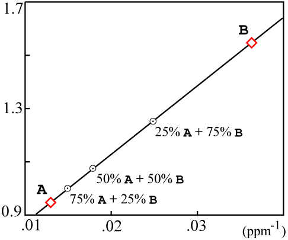
Figura 21. Gráfico para detectar mistura.
Se os pontos de dados resultantes forem colineares, então o isócrono provavelmente é resultado de mistura e, provavelmente, não tem significado real de idade.
Na verdade, os dados de mistura podem cair em uma curva um pouco mais complicada. Faure (1986, Equações 9.5 a 9.10 na p. 142) contém uma derivação precisa. Existem suposições simplificativas que são verdadeiras na maioria dos casos e resultam em uma linha no gráfico de mistura.
No entanto, quando os dados do gráfico de mistura não caem em uma linha:
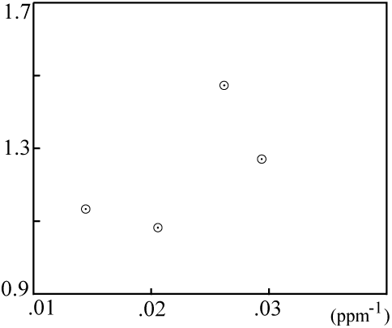
Figura 22. Gráfico de mistura, detectando nenhuma mistura.
... então o isócrono provavelmente não é resultado de mistura, e a idade computada é muito provavelmente significativa.
Artigo de Zheng
Recentemente, parece que alguns criacionistas se apegaram ao Zheng (1989) e referenciam este artigo como se ele tivesse desmentido a datação por isócrono e aberto espaço para uma Terra jovem. O artigo é uma discussão sobre problemas potenciais da datação por isócrono Rb/Sr, com exemplos de casos onde esses problemas são conhecidos por ter ocorrido.
No entanto, o artigo não é muito útil para a causa da Terra jovem. Zheng discute quatro maneiras pelas quais um isócrono incorreto poderia resultar:
- Fractional cristalização prolongada
Exige um período de resfriamento lento da ordem de dez milhões de anos, o que não é possível em uma Terra jovem. Além disso, o efeito é muito sutil: no único exemplo que Zheng apresenta (primeira entrada na Tabela II, p. 14), a idade "incorreta" (437 ± 10 Ma) não difere muito da idade real (415 ± 10 Ma).
- Herdada (por exemplo, por fusão parcial)
Discutida anteriormente; exige circunstâncias especiais e quase sempre induz uma quantidade considerável de dispersão no gráfico de isócrona. Exige material de origem antigo (a idade "herdada" corresponde à idade da fonte), o que não está disponível em uma Terra jovem.
- Isócrona de mistura
Discutida anteriormente; na maioria dos casos detectada pelo teste do gráfico de mistura.
- Isócrona aparente por metamorfismo
Discutida anteriormente; exige circunstâncias especiais e resulta em uma idade entre o tempo original de cristalização e o evento metamórfico que parcialmente resetou a isócrona. Exige material de origem antigo, o que não está disponível em uma Terra jovem.
Embora cada um desses processos possa ser invocado para explicar alguns resultados de datação confusos ou conflitantes, nenhum deles poderia razoavelmente ser esperado para explicar todos (ou mesmo a maioria) dos resultados de datação isocrônica que são incompatíveis com uma Terra jovem.
Resumo dos problemas de isócrono
Existem processos conhecidos que podem resultar em idades incorretas de isócronos, e exemplos de cada um são conhecidos no campo. Se alguém assumisse que um isócrono com bom ajuste implica um resultado confiável, estaria correto aproximadamente nove vezes em dez. No entanto, a precisão pode ser melhorada ainda mais com...
- Testes adicionais nos mesmos dados envolvidos no gráfico isócrono (como o de mistura).
- Verificações cruzadas entre diferentes isótopos com propriedades químicas distintas.
- Atenção ao contexto geológico a partir do qual as amostras foram obtidas.
Como disse Brent Dalrymple:
A maioria [das idades imprecisas] é detectada por salvaguardas apropriadas, como padrões e repetição, mas algumas passam despercebidas muito depois que os dados foram publicados. Em suma, os métodos de datação radiométrica fornecem resultados confiáveis na maioria das vezes, mas não sempre.
[...]
Com verificações cruzadas suficientes, cuidado e experiência, não somos realmente enganados com muita frequência e, quando o somos, geralmente não é por muito tempo.
(1992, p. 1)
Artigo de Gill
Recentemente, Gill (1996) publicou na literatura técnica criacionista, alegando que todas as idades de isócronas Rb-Sr podem ser explicadas como correlações "falsas" sem sentido. O resumo é o seguinte:
Apresenta-se uma resposta matemática para a frequente ocorrência de isócronas Rb-Sr falsas ou "fictícias". A razão para essas inconsistências é que um procedimento de regressão linear simples é matematicamente inválido se duas ou mais variáveis independentes influenciam uma única variável dependente. Em muitos conjuntos de dados para o procedimento de "isócrona", há duas variáveis independentes envolvidas. Primeiro, existe a relação radioativa desejada entre a quantidade do elemento pai rubídio e o elemento filho estrôncio. Segundo, como a concentração atômica de estrôncio nas amostras é uma variável, então o conteúdo isotópico de Sr-87 do átomo [sic] também é uma variável. Em tal situação, a regressão de "Isócrona" é matematicamente inválida, de modo que tanto sua inclinação quanto sua intersecção são errôneas.
Recomendo que as partes interessadas obtenham e leiam este artigo. Vejo quatro problemas principais com as alegações criacionistas -- suficientes para invalidar o artigo criacionista em vez de (como Gill deseja) o procedimento de datação Rb-Sr.
1. Matemática versus química:
O comportamento dos dados de isócrono é limitado de duas formas -- tanto pelo que é matematicamente possível no gráfico, quanto pelo que é fisicamente possível dada a química dos elementos relevantes. O tratamento teórico de Gill concentra-se exclusivamente no comportamento matemático, ignorando a química subjacente. Portanto, corre o risco de chegar a conclusões falsas ao assumir comportamentos que são matematicamente possíveis -- mas quimicamente improváveis ou impossíveis.
O artigo de Gill faz, de fato, esse tipo de má suposição: que as concentrações de 86Sr e 87Sr são essencialmente independentes:
Não existe tal relação simples quando o divisor [86Sr]é uma variável.
[...]
Uma vez que a divisão por uma variável é realizada para a entrada da regressão, o erro torna-se imprevisível e irreversível.
Isso é o ponto crucial do argumento de Gill. Se essa premissa não for precisa, então o argumento de Gill desmorona. Como discutido anteriormente neste FAQ, a homogeneização isotópica ocorre em rocha fundida (e mesmo em temperaturas abaixo do ponto de fusão em muitos casos) onde os elementos relevantes migram livremente. Uma vez que a homogeneização tenha ocorrido, as quantidades de 86Sr e 87Sr não são mais independentes e não podem ser tornadas como tal.
2. Porcentagem de idades Rb-Sr problemáticas:
Gill sugere que uma grande porcentagem das idades de isócrono Rb-Sr estão incorretas, mesmo do ponto de vista da ciência mainstream:
A literatura geológica está repleta de referências a idades isócronas Rb-Sr que são questionáveis, e até mesmo impossíveis. Woodmorappe (1979, pp. 125-129) cita cerca de 65 referências ao problema. Fause (1977, pp. 97-105) dedica seu capítulo sete às possíveis causas de isócronas "fictícias". Zheng (1989, pp. 15-16) também cita 42 referências.
As alegações de Gill são falsas. Isocronos falsos devido à mistura podem ser relativamente comuns (incidentalmente, esse é o real tópico do capítulo sete de Faure). No entanto, estes podem ser (como discutido na seção de mistura deste FAQ) detectados facilmente e eliminados da consideração. Do restante, no entanto, a esmagadora maioria está bem alinhada com os resultados que seriam esperados dada a idade e a história mainstream da Terra.
Um número muito grande de isócronas Rb/Sr já foi realizado. Não podemos ser impressionados pelo número de datas supostamente ruins nas dezenas baixas; elas representam uma fração ínfima dos resultados relatados, e (tanto em papers criacionistas quanto não-criacionistas sobre potenciais problemas com o método) representam apenas os valores "anômalos" coletados de um corpo muito maior de dados. Alguns dos papers incluem casos óbvios de mistura, bem como casos onde o conjunto de dados é muito pequeno ou muito mal ajustado para ser levado a sério.
Para realizar uma avaliação razoável da porcentagem das idades de isócronas Rb-Sr que são "inconvenientes" para a ciência mainstream, contaríamos aquelas que: (1) não falham no teste de mistura, (2) incluem mais de quatro pontos de dados e (3) mostram uma excelente correlação (dizemos, uma incerteza de idade de menos de 0,1Ga é calculada a partir dos dados). Seria impraticável tentar tal exercício em todas as idades de isócronas Rb-Sr que já foram relatadas. No entanto, é perfeitamente possível examinar completamente a literatura de um subconjunto dos dados.
Brent Dalrymple (1991, Capítulos 5 e 6) relata um grande número de idades de isócronas Rb-Sr para meteoritos e rochas lunares. Estes são candidatos bastante adequados para tal levantamento, porque: (1) tendem a ter histórias geologicamente simples, e, portanto, a interpretação dos resultados é mais direta; (2) não há grandes quantidades desses objetos para serem datados (isso facilita um levantamento dos dados e também elimina a alegação criacionista comum de que poderia haver um número muito maior de resultados "inconvenientes" que não são publicados).
3. O exemplo de Gill é artificial:
Muito do trabalho de Gill discute um único exemplo, que é artificial. Ele traduz quatro pontos de dados colineares de tal forma que os dois mais à esquerda são empurrados para 3/4 do caminho em direção à origem, e os dois mais à direita são empurrados para 1/2 do caminho em direção à origem.
O resultado é essencialmente dois "grupos" de dados (o ponto de um par é movido mais perto um do outro pela tradução de Gill). Como qualquer duas coisas serão colineares, os dois grupos são colineares. Como os pontos de dados em cada grupo estão bastante próximos uns dos outros, não há muita dispersão em torno da linha. No entanto, se Gill tivesse escolhido dividir o primeiro e último pontos por quatro (em vez dos dois primeiros), ou tivesse escolhido quatro divisores diferentes, o ajuste à linha alterada seria muito pior do que o ajuste original.
4. Gill ignora as técnicas de avaliação isocrônica realmente em uso:
As regressões lineares simples de Gill não são exatamente a técnica utilizada para avaliar os ajustes de isócronos. Existem métodos bastante complexos para avaliar o ajuste versus os erros de medição esperados; mesmo quando ("de olho") os dados parecem ser bastante colineares, isso não significa que o procedimento indicará um isócrono provavelmente válido.
É difícil avaliar o próprio exemplo de Gill como se fosse realista, porque seus valores não são medições isotópicas reais e foram simplesmente extraídos do nada. Embora uma correlação de 0,993 possa soar impressionante, vários diagramas de isócronas de exemplo extraídos da literatura técnica apresentaram ajustes muito melhores (0,997 a 0,998).
Algumas perguntas do talk.origins
Abaixo seguem perguntas interessantes que foram feitas no talk.origins sobre a datação por isócrono. Os nomes dos "questionadores" não foram incluídos porque não foi obtida permissão para usar seus nomes.
- Como você distingue entre estrôncio radiogênico e não radiogênico 87Sr?
Para o método de isócrona Rb/Sr, a razão entre 87Sr e 86Sr no momento da formação não é necessária como entrada para a equação. Em vez disso, é dada pelo intercepto Y da linha de isócrona. É um subproduto do cálculo da idade... desde que os dados sejam colineares.
- O que é a datação por isócrono? um método, uma equação, um gráfico ...?
Um "isócrono" é um conjunto de pontos de dados em um gráfico que todos caem em uma linha representando uma única idade ("isócrono" vem de: "isos" igual + "chronos" tempo). O termo "errocrono" foi cunhado para um conjunto de dados que não são colineares. A linha de melhor ajuste em si também é às vezes chamada de "isócrono." O gráfico no qual esses pontos de dados aparecem é às vezes chamado de "diagrama de isócrono" ou "gráfico de isócrono."
Um método de datação que usa tal gráfico para determinar a idade é chamado de "método de datação por isócrono." Quando "datação por isócrono" é mencionada nesta FAQ, a intenção é cobrir a metodologia que é comum a todos os "métodos de datação por isócrono."
A metodologia de isócrono é aplicada com os seguintes isótopos:
* A maioria da datação com esses isótopos não é realizada via a metodologia exata de isócrono descrita aqui.
PDDimeia-vida (*109 anos)
87Rb 87Sr 86Sr 48,8 40K * 40Ar 36Ar 1,25 147Sm 143Nd 144Nd 106 176Lu 176Hf 177Hf 35,9 187Re 187Os 186Os 43 232Th * 208Pb 204Pb 14 238U * 206Pb 204Pb 4,47
Tabela 4. Isótopos usados para datação por isócrono
- Como é determinada a meia-vida de um elemento? Para algo que leva 60 bilhões de anos para decair parcialmente, como é determinada uma medida exata da taxa de decaimento em apenas algumas horas?
As avaliações de meia-vida não necessariamente levam apenas "algumas horas". Davis et al. (1977) mediram a taxa de decaimento de 87Rb (48,9 ± 0,4 bilhões de anos) contando a acumulação de 87Sr ao longo de um período de dezenove anos.
A incerteza estatística em uma avaliação da taxa de decaimento é uma função do número de decaimentos contados. "Algumas horas" (da ordem de 10-15 meias-vidas de um isótopo de longa duração) é um intervalo de tempo relativamente curto, mas isso é mais do que compensado pelo fato de que mesmo um miligrama de qualquer isótopo radioativo relevante contém pelo menos 1018 átomos.
Mesmo em uma pequena amostra de um isótopo de longa duração, haverá um fluxo constante de decaimentos. Se o tamanho da amostra pode ser medido com precisão e o número de decaimentos pode ser contado com precisão, então a meia-vida pode ser calculada com precisão. Essa é a base para os "experimentos de contagem direta" a partir dos quais as meias-vidas são calculadas.
- A linha está nos dizendo que, não importa o tamanho da amostra que tomemos,
sempre temos a mesma proporção de pai para filha.
[...]
Então, vamos supor que, quando as rochas foram formadas, certas quantidades tanto do pai quanto da filha estavam presentes. Mas, no processo de formação, tudo ficou distribuído uniformemente. Você teria sua bela linha reta de isócrono, mas ainda não saberia a idade da sua amostra.A afirmação estaria correta se o gráfico de isócrono fosse quantidade de pai (
P) versus quantidade de filha (D). Mas o gráfico é ao invés dissoP/DivsD/Di. ComoDivaria em diferentes minerais, os dados de isócrono podem plotar em uma linha quandoPvsDnão o fariam.É fácil entender como diferentes minerais em uma rocha poderiam obter diferentes razões
P/Di.PeDitêm propriedades químicas diferentes.Pse encaixará melhor em alguns minerais do queDi(e vice-versa). Isso explica por que os pontos de dados não caem todos no mesmo valor X.No entanto, é menos fácil entender como diferentes minerais em uma rocha poderiam acabar com diferentes razões
D/Di. O que o gráfico de isócrono pode descobrir, se o resultado for um bom ajuste a uma linha com inclinação positiva, é que existe uma correlação extremamente forte entre (1) enriquecimento emD, e (2) nível deP. ComoDé produzido a partir dePpor decaimento radioativo, a correlação sugere fortemente tanto (1) a idade da amostra e (2) que ela tem sido relativamente livre de contaminação desde a formação. - Se uma área estiver homogênea, então você sempre obterá a mesma proporção de tudo o que pegar. E todos estarão igualmente relacionados uns aos outros.
[...]
Em alguns milhares de anos, o decaimento é insignificante, então a linha isócrona representaria apenas a mistura uniforme durante a formação.A situação que você descreveria não resultaria em uma idade. Se não houvesse separação química de
Pversus (DeDi) no momento da formação, todos os dados plotados cairiam em um único ponto no diagrama isócrono. (Esse ponto inicialmente seria a composição do material fonte, como em Figura 3.) Não é possível derivar uma linha de melhor ajuste a partir de um único ponto e, portanto, não resultaria em nenhuma idade. - Mas quando os cientistas obtêm dados para algo que parece contaminado, o que eles fazem com isso? Se os dados não se conformam ao método isócrono e caem ao longo de uma linha, presume-se que seja interpretado como contaminação, como seu FAQ também diz. Por que manter amostras ruins?
Parece que você está sugerindo que os geólogos poderiam tentar repetidamente gráficos isócronos em um único item até obter um em que os pontos de dados se alinhem, o que provavelmente não é representativo de sua idade "real", e apenas aquele é publicado. (Isso está a um passo de algum "conspiracionismo" bastante pesado.) Aqui estão algumas razões pelas quais eu fortemente duvido que isso seja feito:
- É reconhecido como sendo desonesto. Se um geólogo fosse plotar 30 pontos de dados e depois enterrar os dez que ficavam mais longe da linha isócrona de ajuste por mínimos quadrados, a próxima pessoa a tentar replicar o experimento descobriria a fraude. O mesmo seria verdade para alguém que enterrasse evidências de muitos gráficos ruins em favor de um bom.
Pontos de dados fora da curva regularmente relatados, quase sempre plotados no diagrama isócrono... mas ocasionalmente não incluídos no cálculo da linha de melhor ajuste. (No entanto, isso é sempre esclarecido no artigo; a exclusão de uma pequena porcentagem de valores atípicos é uma prática estatística razoavelmente padrão para melhorar a precisão dos cálculos.)
- Realizar múltiplos gráficos isócronos em busca de um "bom" seria absurdamente caro. Apenas uma única idade isócrona requer um número bastante grande de medições envolvendo equipamentos bastante caros. De acordo com a literatura de arrecadação de fundos do ICR de vários anos atrás, eles gastaram dezenas de milhares de dólares em seu "Projeto de Datação do Grand Canyon" -- e tiveram uma idade isócrona Rb-Sr (e algumas medições de outros isótopos) para mostrar. (Embora isso seja um pouco extremo, não é um procedimento barato.)
- Testes adicionais provavelmente dariam o mesmo resultado que o primeiro, e haveria uma probabilidade muito baixa de obter um gráfico significativamente melhor. A maioria dos cientistas direcionaria sua atenção para outro lugar (talvez selecionando um método de datação diferente, ou procurando amostras menos perturbadas da mesma formação), em vez de tentar exatamente a mesma coisa novamente.
- Resultados negativos são regularmente publicados. Mesmo quando o gráfico não fornece a idade diretamente, é frequentemente possível obter muitas informações úteis sobre a história da amostra a partir dos dados. Por exemplo, veja Faure (1986, p. 126).
- Finalmente, e mais importante... se fosse o caso que as idades isócronas eram essencialmente números fictícios aleatórios, então não esperaríamos nenhum tipo de acordo entre métodos diferentes, resultados publicados por pesquisadores diferentes, etc. Por exemplo, veja as tabelas de idades de isótopos de meteoritos em O FAQ da talk.origins sobre a Idade da Terra. Vários investigadores diferentes usando vários métodos de datação consistentemente produzem resultados concordantes.
Isso é facilmente explicado (de fato, requerido) se esses métodos fornecerem idades precisas. Como é explicado se as "idades" são essencialmente números aleatórios? Suponha que o primeiro pesquisador publique uma idade de
Xanos. Você acha que a próxima pessoa a estudar a mesma formação vai continuar repetindo o método isócrono até obter dados isócronos que tanto plotem como uma linha quanto concordem com o trabalho do pesquisador original? Não é o problema dele se a idade originalmente publicada estiver incorreta.
- É reconhecido como sendo desonesto. Se um geólogo fosse plotar 30 pontos de dados e depois enterrar os dez que ficavam mais longe da linha isócrona de ajuste por mínimos quadrados, a próxima pessoa a tentar replicar o experimento descobriria a fraude. O mesmo seria verdade para alguém que enterrasse evidências de muitos gráficos ruins em favor de um bom.
Leituras relacionadas
Uma excelente introdução semi-técnica aos métodos de datação por isótopos (com ênfase em isócronos e datação por isótopos de chumbo) está disponível em Dalrymple (1991). Recomendo fortemente este texto. Ele é acessível para aqueles que não estudaram o campo e até recebeu revisões razoavelmente positivas na literatura criacionista. Métodos de isócronos são introduzidos em uma seção intitulada "Diagramas Diagnósticos de Idade" (pp. 102-124).
Para aqueles que não se importam em navegar por um livro-texto de nível universitário sobre datação por isótopos, também recomendo altamente Faure (1986). É o texto padrão em todo o campo e inclui um grande número de referências à literatura primária. E, como o livro de Dalrymple, também recebeu revisões razoavelmente positivas na literatura criacionista. Os métodos de isócrona são introduzidos pela primeira vez no Capítulo 6 (especificamente pp. 72-74). Um tratamento mais detalhado é dado no Capítulo 8, e o Capítulo 9 é um tratamento estendido sobre mistura.
Referências
Dalrymple, G. Brent, 1991. A Idade da Terra. Califórnia: Stanford University Press, ISBN 0-8047-1569-6.
Voltar à referência a esta obra
Dalrymple, G. Brent, 1992. Some Comments
and Observations on Steven Austin's "Grand Canyon Dating Project". Não publicado.
Voltar à referência a este trabalho
Davis, D.W., J. Gray, G.L. Cumming, e H. Baadsgard,
1977. "Determinação da constante de decaimento 87Rb" em Geochim.
Cosmochim. Acta 41, pp. 1745-1749.
Voltar à referência a este trabalho
Faure, Gunter, 1986. Princípios de Geologia de Isótopos (Segunda Edição). Nova York: John Wiley and Sons, ISBN 0-471-86412-9.
Voltar para contaminação, questões ou leitura adicional
Gill, G.H., 1996. "Uma Razão Suficiente para Isocronas Falsas de Rb-Sr" em Creation Research Society Quarterly 33, pp. 105-108.
Voltar à referência a este trabalho
Gonick, Larry, 1993. O Guia em Quadrinhos para Estatística. Nova York: HarperPerennial, ISBN 0-06-273102-5.
Voltar à referência a esta obra
York, Derek, 1969. "Ajustamento de mínimos quadrados a uma linha reta" em Canadian Journal of Physics 44, pp. 1079-1086.
Voltar à referência a este trabalho
Zheng, Y.-F., 1989. "Influences of the nature of the
initial Rb-Sr system on isochron validity" in Chemical Geology (Isotope Geoscience
Section) 80, pp. 1-16.
Voltar à referência a este trabalho